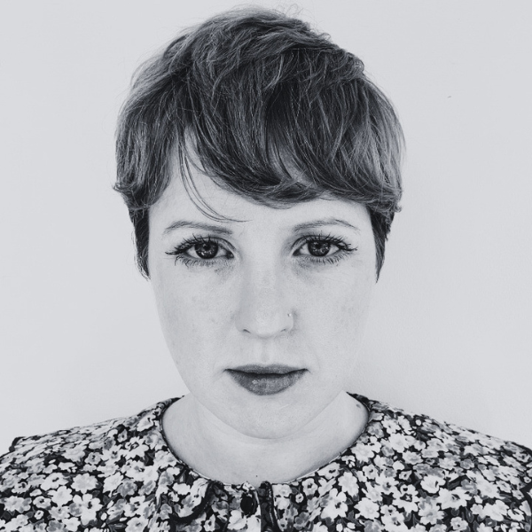
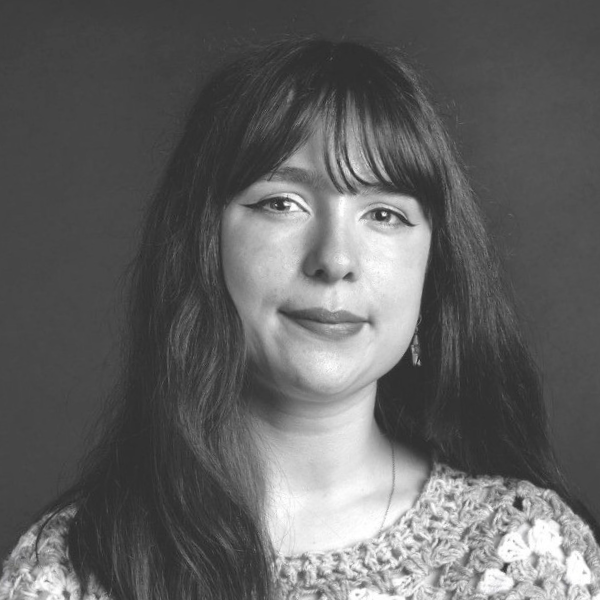

Who is behind PATHS?
Our dedicated research team is based at the Nimbus Research Centre, Munster Technological University Cork, working directly with the Traveller community throughout the project.
Michelle's PhD developed a framework and card-based toolkit to support the creation and sustainment of Communities of Practice, shaping her approach to sustained, structured community engagement today.
On projects such as MOBILISE, that same focus was brought to research on energy poverty within the Irish Traveller community, exploring what ideal, inclusive housing solutions could look like from the ground up.

Denise works at the intersection of participatory research, inclusive design and community engagement.
Her work spans collaborative research projects that centre community voices and lived experience, across areas including energy equity, digital inclusion, and digital public services, including MOBILISE, where she worked alongside the Irish Traveller community to explore what workable, inclusive housing solutions could look like.

Moya holds an MA(Res) exploring change management processes and the implications of Generative AI on education.
Within projects such as MOBILISE, she brought a design lens to research on energy poverty within the Traveller community, turning insights into accessible visual resources.
Nimbus Research Centre, MTU
The Nimbus Research Centre is Ireland’s leading research facility for Cyber-Physical Systems and the Internet of Things.
Nimbus combines technological advancement with human-centred design and co-creation, to help technology solve real societal problems.
Nimbus researchers work closely with citizens, public bodies, and businesses to build user-friendly solutions across areas like smart energy, assisted living, smart manufacturing, and virtual reality education.